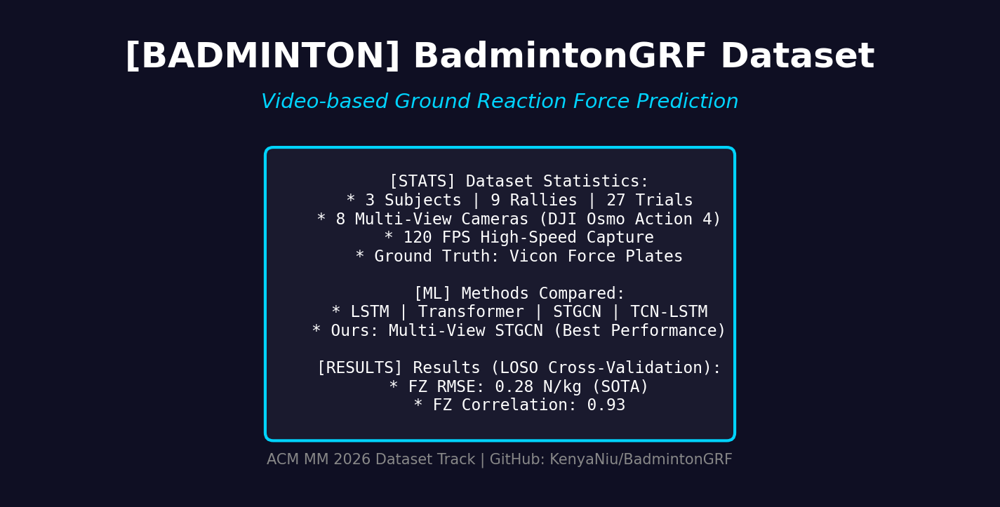
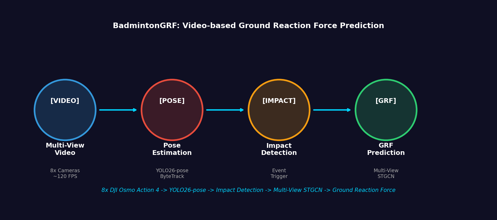

BadmintonGRF
A Multimodal Dataset and Benchmark for Markerless Ground Reaction Force Estimation in Badminton
ACM Multimedia 2026 Dataset Track
1School of Sports Engineering, Beijing Sport University
2College of Control Science and Engineering, Zhejiang University
3Wuhan Sports University
4Department of Physical Education, Zhejiang Gongshang University
5Department of Sports Science, Zhejiang University
*Corresponding Author
2College of Control Science and Engineering, Zhejiang University
3Wuhan Sports University
4Department of Physical Education, Zhejiang Gongshang University
5Department of Sports Science, Zhejiang University
*Corresponding Author

Abstract: Public multimodal resources rarely pair laboratory ground reaction force (GRF) with high-frame-rate multi-view video for non-periodic court sports. BadmintonGRF links eight-view ~120 FPS RGB, four Kistler plates, and Vicon C3D; without hardware genlock, software alignment uses human-verified events, automatic quality assurance (QA), and per-camera offsets with uncertainty metadata. Tier 1 releases 2D pose and aligned GRF; Tier 2 provides raw RGB/C3D under application access. We release 17,425 impact-segment archives (10-subject tree; 156 trials); after loader gates: 12,867 instances and 1,732 unique impacts (multi-view collapsed). To our knowledge, no prior public badminton resource combines this sensing stack with audited video-GRF alignment for impact-centric GRF estimation. We open-source preprocessing, LOSO splits, ten baselines, and late fusion.
🌟 Highlights & Features
- Study-Grade Multimodal Capture: 8 multi-view RGB cameras (~120 FPS), 4 Kistler 6-axis force plates (1000/1200 Hz), and Vicon C3D (~52 markers).
- Impact-Centric Protocol: Focuses on non-periodic badminton court movements and landings, with rigorous fatigue-stage annotations for distribution shift studies.
- Software-Level Alignment: High-fidelity human-in-the-loop alignment with automatic QA, avoiding costly hardware genlock while providing bounded residual error metadata.
- Reproducible Benchmark: Fixed LOSO (Leave-One-Subject-Out) splits, 10 reproducible baseline models (e.g., PatchTST, TSMixer, ST-GCN), and a comprehensive evaluation protocol.
- Tiered Release: Privacy-preserving Tier 1 (CC BY-NC 4.0) with extracted poses and GRF, and controlled Tier 2 for raw multi-view RGB/C3D access.
📸 Data Modalities & Pipeline

Figure 1: Instrumented court geometry with 8 fixed cameras, 4 force plates, and Vicon mocap context.

Figure 2: End-to-end preprocessing flow from raw multi-view capture to benchmark-ready impact segments.

Figure 3: Multi-view 2D COCO-17 pose extraction during a dynamic jump landing.

Figure 4: Synchronized 3-axis Ground Reaction Force (GRF) during footwork, focusing on vertical Fz impacts.
🏆 Benchmark Results
We evaluate 10 baseline architectures under a rigorous Leave-One-Subject-Out (LOSO) protocol to assess cross-subject generalization for vertical force (Fz) estimation. The table below presents the single-view (SV) results. (For multi-view late fusion and within-trial bounds, see the main paper).
| Model | r² ↑ | RMSE (BW) ↓ | Peak Error (BW) ↓ | Peak Timing (frames) ↓ |
|---|---|---|---|---|
| PatchTST | 0.403 | 0.510 | 0.226 | 1.07 |
| ST-GCN+Transformer | 0.394 | 0.514 | 0.221 | 0.96 |
| TCN+BiGRU | 0.390 | 0.514 | 0.348 | 3.79 |
| TCN+BiLSTM | 0.374 | 0.521 | 0.309 | 2.58 |
| TSMixer | 0.351 | 0.531 | 0.218 | 1.85 |
| Seq-Transformer | 0.345 | 0.533 | 0.281 | 1.82 |
📖 Citation
If you find this dataset or benchmark useful in your research, please cite our paper:
@inproceedings{niu2026badmintongrf,
title={BadmintonGRF: A Multimodal Dataset and Benchmark for Markerless Ground Reaction Force Estimation in Badminton},
author={Niu, Kuoye and Li, Jianwei and Cai, Shengze and Ma, Yong and Jia, Mengyao and Shen, Lishun and Zhang, Zhenheng and Peng, Yuxin and Song, Xian},
booktitle={Proceedings of the 34th ACM International Conference on Multimedia},
year={2026}
}